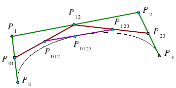

| Name | ID Number |
|---|---|
| K Venkat Anoop | 2017A7PS0271H |
| M Trinadh | 2017A7PS0061H |
| C Mahesh Babu | 2017A7PS0235H |
In this algorithm, we recursively eliminate control points by lrep function. we will do this until we get one final point. 
this is the video of the final result.
library "GL/freeglut.h" is used for openGL. we use function glutMouseFunc() for the interaction with mouse. on right click of mouse, we will add controlpoint to the curve and on left click of mouse, we will remove controlpoint from the curve. middle button to move control point on the screen.